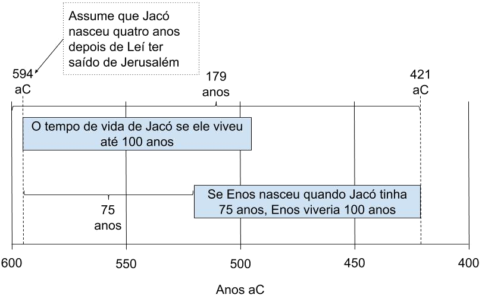

1 Eis que
aconteceu que eu, Enos, sabia que meu pai era um homem
justo — pois instruiu-me em seu idioma e também
nos preceitos e na admoestação do Senhor — e bendito seja o
nome de meu Deus por isso —
2 E
relatar-vos-ei a luta que travei perante Deus antes de receber
a remissão de meus pecados.
3 Eis que saí
para caçar animais nas florestas; e as palavras que frequentemente ouvira de
meu pai sobre a vida eterna e a alegria dos
santos penetraram-me profundamente o coração.
4 E minha alma
ficou faminta; e ajoelhei-me ante o meu Criador e clamei-lhe,
em fervorosa oração e súplica, por minha própria alma; e clamei o
dia inteiro; sim, e depois de ter anoitecido, continuei a elevar a minha voz
até que ela chegou aos céus.
5 E ouvi
uma voz, dizendo: Enos, perdoados são os teus pecados e tu serás
abençoado.
Enos 1:5-8
O versículo 1 nos
diz que o pai de Enos o instruiu “nos preceitos e na admoestação do Senhor.” Mas,
Enos não sabia que foi pela fé em Cristo que seus pecados foram perdoados e
sua culpa foi apagada?
6 E eu, Enos,
sabia que Deus não podia mentir; portanto, a minha culpa foi apagada.
Anotação para Enos 1:5-8 acima
7 E eu disse:
Senhor, como isso aconteceu?
Anotação para Enos 1:5-8 acima
8 E ele
respondeu-me: Por causa da tua fé em Cristo, a quem nunca ouviste
nem viste antes. E muitos anos hão de passar antes que ele se manifeste na carne;
portanto, vai, tua fé te salvou.
Anotação para Enos 1:5-8 acima
9 Ora,
aconteceu que após ter ouvido estas palavras, comecei a desejar o
bem-estar de meus irmãos, os nefitas; portanto, implorei a Deus por
eles com toda a minha alma.
10 E enquanto
estava assim lutando no espírito, eis que a voz do Senhor me veio outra vez
à mente, dizendo: Visitarei teus irmãos segundo a sua diligência em
guardar meus mandamentos. Dei-lhes esta terra e é uma terra santa;
e não a amaldiçoarei senão por causa de iniquidade; portanto,
visitarei teus irmãos, conforme disse; e suas transgressões, com pesar, farei
recair sobre suas cabeças.
11 E depois que
eu, Enos, ouvi estas palavras, minha fé no Senhor começou a tornar-se
inabalável; e roguei-lhe com muito empenho por meus irmãos, os lamanitas.
12 E aconteceu
que após ter orado e me empenhado com toda a diligência, o Senhor
disse-me: Por causa de tua fé conceder-te-ei de acordo com teus desejos.
13 E então, eis
que isto era o que eu desejava dele — que se acaso o meu povo, o povo
nefita, caísse em transgressão e de algum modo fosse destruído e os
lamanitas não fossem destruídos, que o Senhor Deus preservasse um
registro de meu povo, os nefitas; mesmo que fosse pelo poder de seu santo
braço, que ele pudesse ser revelado aos lamanitas em alguma época
futura, para que talvez fossem conduzidos à salvação —
14 Pois até
agora nossos esforços para levá-los de volta à verdadeira fé têm
sido vãos. E juraram em sua ira que, se fosse
possível, destruiriam nossos registros juntamente conosco; e
também todas as tradições de nossos pais.
15 Portanto,
sabendo eu que o Senhor Deus podia conservar nossos registros, a ele clamei
continuamente, porque me dissera: Tudo quanto pedires com fé, acreditando que
receberás em nome de Cristo, tu receberás.
16 E eu tinha
fé e roguei ao Senhor que preservasse os registros; e ele fez convênio
comigo de que os revelaria aos lamanitas em seu próprio e
devido tempo.
Assim, Deus fez o
convênio de trazer os registros dos nefitas aos lamanitas. Quem são os
lamanitas então? Geneticamente, culturalmente, antropologicamente,
linguisticamente etc., não há evidência de lamanitas.
17 E eu, Enos,
estava certo de que aconteceria de acordo com o convênio que ele fizera;
minha alma, portanto, ficou tranquila.
18 E disse-me o
Senhor: Teus pais também me fizeram o mesmo pedido; e ser-lhes-á feito de
acordo com sua fé, pois sua fé era igual a tua.
19 E aconteceu
que eu, Enos, andei no meio do povo de Néfi, profetizando as coisas que
estavam por acontecer e testemunhando as coisas que havia ouvido e visto.
20 E testifico
que o povo de Néfi procurou diligentemente reconduzir os lamanitas à
verdadeira fé em Deus. Nossos esforços, porém, foram vãos; seu ódio era
implacável e eles eram guiados por sua natureza iníqua, de modo que se
tornaram selvagens e ferozes e um povo sanguinário, cheio
de idolatria e imundície, alimentando-se de animais predadores,
habitando em tendas e vagando pelo deserto, com uma curta faixa de pele ao
redor dos lombos e a cabeça rapada; sua habilidade consistia no manejo
do arco e da cimitarra e do machado. E muitos deles não comiam
senão carne crua; e procuravam continuamente destruir-nos.
21 E aconteceu
que o povo de Néfi cultivou a terra e produziu toda espécie de grãos e de
frutas; criou rebanhos de reses e rebanhos de todo tipo de gado de toda
espécie; e cabras e cabras monteses e também muitos cavalos.
Observe a
diferenciação entre cabras e cabras monteses, indicando que os nefitas tinham
cabras domesticadas. Não há absolutamente nenhuma evidência de cabras domesticadas
entre os nativos americanos pré-colombianos. Também não havia cavalos nas Américas naquela
época.
22 E houve
muitíssimos profetas entre nós e o povo era obstinado e
duro de compreensão.
23 E nada
havia, exceto muitos dissabores, pregações e profecias de
guerras; e contendas e destruições que continuamente
os faziam lembrar da morte e da duração da eternidade e dos
julgamentos e poder de Deus e todas estas coisas — levando-os a
manterem-se continuamente no temor do Senhor. E digo que nada,
salvo estas coisas e grande franqueza no falar, evitaria que se precipitassem
rapidamente na destruição. E
assim escrevo a respeito deles.
No entanto, D&C
19:6-12 ensina claramente que “Eterno” não significa que dura para sempre
quando se trata de tormento ou condenação, então seria honesto que
“continuamente os faziam lembrar . . . da duração da eternidade”?
24 E presenciei
guerras entre os nefitas e lamanitas no curso de meus dias.
25 E aconteceu
que comecei a envelhecer; e haviam decorrido cento e setenta e nove anos da
época em que nosso pai, Leí, deixara Jerusalém.
Enos 1:25-26
O pai de Enos é Jacó
(Jacó 7:27) que nasceu no deserto antes de os leítas deixarem o Velho Mundo.
Depois de aproximadamente 175 anos desde o nascimento de Jacó, o filho de
Jacó morrerá em breve (Enos 1:26). Isso não é necessariamente impossível, mas
quão provável é isso? Se nós generosamente assumirmos que Jacó tinha 50 anos
quando ele gerou Enos, Enos teria 125 anos de idade. Para fazer com que Enos
tivesse somente 100 anos de idade, devemos presumir que Jacob o gerou quando
tinha por volta dos 75 anos.
26 E vi que
logo deveria descer à sepultura, tendo sido inspirado pelo poder de Deus a
pregar e profetizar a este povo e declarar a palavra segundo a verdade que
está em Cristo. E declarei-a durante todos os meus dias e nisso me tenho
regozijado mais do que nas coisas do mundo.

Linha do Tempo, Jacó e Enos
27 E logo irei
para o lugar de meu descanso, que é com meu Redentor, pois sei que nele
descansarei. E regozijo-me no dia em que meu corpo mortal
revestir-se de imortalidade e apresentar-se diante dele; então
verei a sua face com prazer e ele me dirá: Vem a mim, ó bendito; há um lugar
preparado para ti nas mansões de meu Pai. Amém.